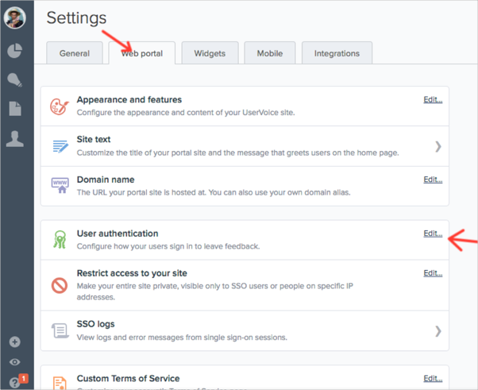
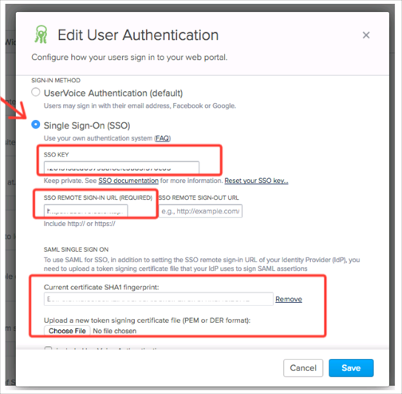
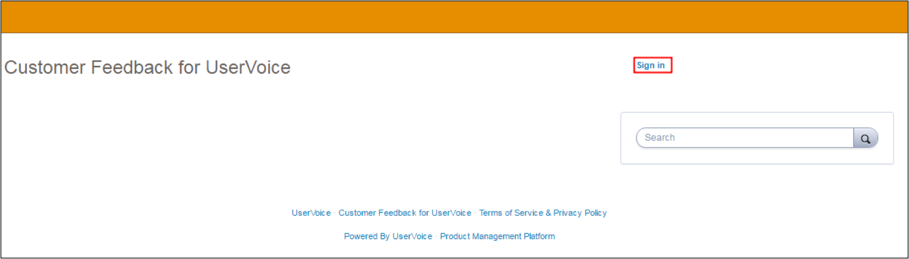

Login to your UserVoice Admin console.
Navigate to Settings > Web portal > User authentication.
Click Edit.

Select Single Sign-On (SSO), then enter the following:
SSO REMOTE SIGN-IN URL (REQUIRED): Copy and paste the following:
Sign into the Okta Admin Dashboard to generate this variable.
Current certificate SHA1 fingerprint: Save then upload the following (in .cert format):
Sign into the Okta Admin Dashboard to generate this variable.SSO KEY: Make a copy of this value.
Click Save.

In Okta, select the General tab for the UserVoice app, then click Edit
Enter the value you copied from UserVoice for SSO KEY into the corresponding field.
Enter [your-uservoice-subdomain] value into the Subdomain field.
Click Save.

Notes:
SP-initiated flows, IDP-initiated flows, and Just In Time (JIT) Provisioning are all supported.
Go to https://[your-uservoice-subdomain].uservoice.com URL.
Click Sign in.
